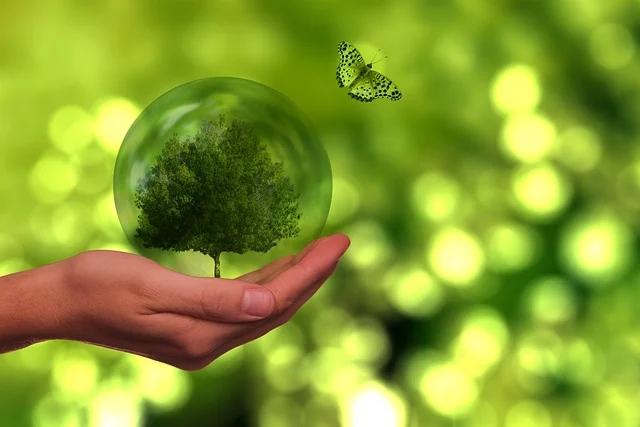

Conférence de l'UNPG
Façonner l'avenir ensemble
À propos de la conférence
Rejoignez-nous pour une journée exceptionnelle d'échanges, de débats et de visionnaires qui façonneront le futur de notre société. Cette conférence rassemblera les esprits les plus brillants et innovants de notre parti pour discuter des enjeux cruciaux de demain.
Date :
Lieu : Centre de Conférences

Intervenant
Experte en Intelligence Artificielle et Éthique

Intervenant
Spécialiste en Écologie Urbaine

Intervenant
Experte en Économie Circulaire
Programme
09:00 - 10:00
Ouverture et discours de bienvenue
10:00 - 11:30
Panel : L'IA au service de la démocratie
11:45 - 13:00
Conférence : Villes du futur et développement durable
14:00 - 15:30
Atelier : Économie circulaire et emplois de demain
16:00 - 17:00
Table ronde : L'avenir de la politique à l'ère numérique
17:15 - 18:00
Clôture et perspectives d'avenir
Inscrivez-vous maintenant
Ne manquez pas cette opportunité unique de participer à la construction de notre avenir politique.
S'inscrire